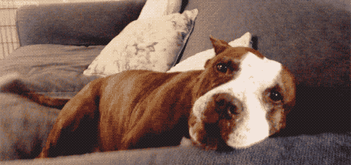

Son una raza de perros muy peculiar por la forma de su rostro, tambien son prerros muy enfermizos

Los perros pitbull, con su enorme sonrisa, son expertos en robar corazones. Aunque son increíblemente protectores con sus personas favoritas, también son bastante cariñosos. Además, a los cachorros pitbull les encanta jugar sin parar e interactuar tanto con niños como con adultos.